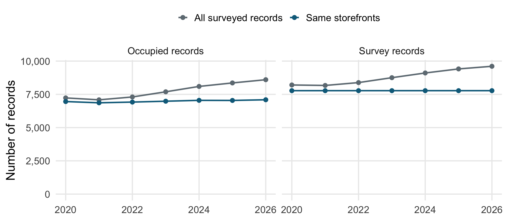
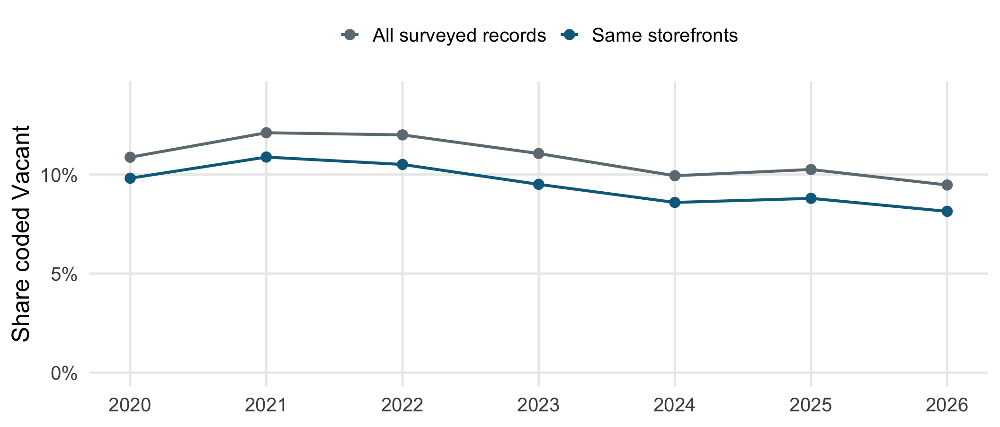
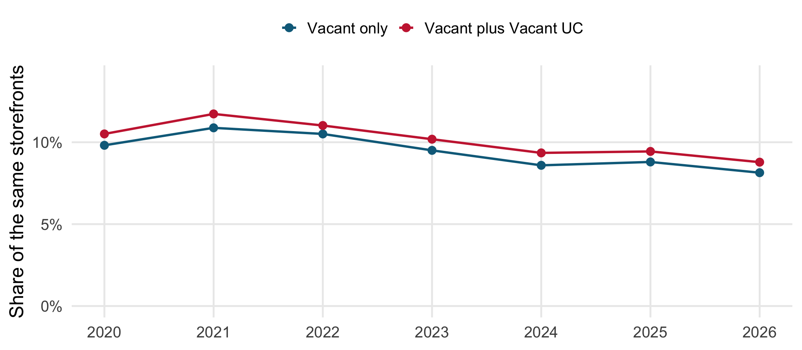
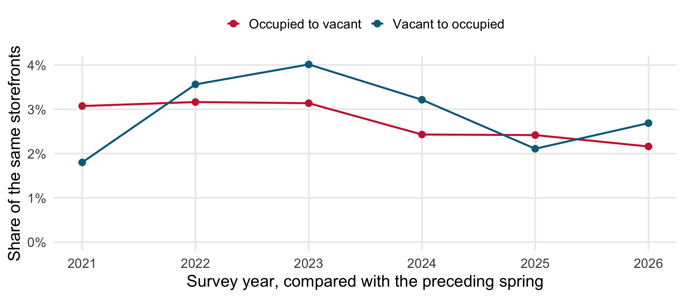
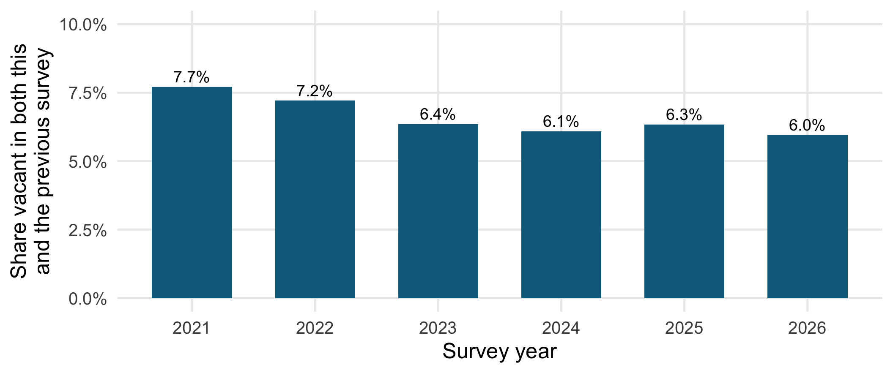

library(tidyverse)theme_set(theme_minimal(base_size =19) +theme(legend.position ="top", legend.title =element_blank(),panel.grid.minor =element_blank()))sample_colours <-c("All surveyed records"="#6f7b83", "Same storefronts"="#0b6b8a")storefronts <-read_csv("docs/example_data/vancouver_storefronts_2020_2026.csv.gz",show_col_types =FALSE) |>mutate(year =as.integer(year_recorded),status =if_else(general_business_category %in%c("Vacant", "Vacant UC"), general_business_category, "Occupied"))stopifnot(!anyNA(storefronts$store_id), !anyNA(storefronts$status),setequal(unique(storefronts$year), 2020:2026))# Some IDs identify two records in a year. Do not silently pick one or treat# both as the same physical unit. Exclude those IDs from longitudinal work.duplicate_ids <- storefronts |>count(store_id, year) |>filter(n >1) |>distinct(store_id) |>pull(store_id)unique_stores <-filter(storefronts, !store_id %in% duplicate_ids)panel <- unique_stores |>filter(n_distinct(year) ==7, .by = store_id)stopifnot(!anyDuplicated(select(panel, store_id, year)),all((count(panel, store_id))$n ==7))samples <-bind_rows(`All surveyed records`= storefronts,`Same storefronts`= panel, .id ="sample")annual <- samples |>summarize(records =n(), occupied =sum(status =="Occupied"),vacancy =mean(status =="Vacant"),vacancy_including_uc =mean(status %in%c("Vacant", "Vacant UC")),.by =c(sample, year))panel_annual <-filter(annual, sample =="Same storefronts")all_annual <-filter(annual, sample =="All surveyed records")panel_n <-n_distinct(panel$store_id)transitions <- panel |>arrange(store_id, year) |>mutate(prev_year =lag(year), prev_status =lag(status), .by = store_id) |>filter(!is.na(prev_year))stopifnot(all(transitions$year == transitions$prev_year +1),all((count(transitions, year))$n == panel_n))flows <- transitions |>summarize(became_vacant =mean(prev_status =="Occupied"& status =="Vacant"),filled =mean(prev_status =="Vacant"& status =="Occupied"),repeated_vacancy =mean(prev_status =="Vacant"& status =="Vacant"),# Include movements to/from Vacant UC when checking the stock identity.uc_net =mean(prev_status =="Vacant UC"& status =="Vacant") -mean(prev_status =="Vacant"& status =="Vacant UC"),vacancy_change =mean(status =="Vacant") -mean(prev_status =="Vacant"),.by = year )stopifnot(isTRUE(all.equal(flows$vacancy_change, flows$became_vacant - flows$filled + flows$uc_net)))# Check that the longitudinal result is not sensitive to ambiguous IDs.unique_rates <- unique_stores |>summarize(vacancy =mean(status =="Vacant"), .by = year) |>left_join(select(all_annual, year, all_vacancy = vacancy),by ="year", relationship ="one-to-one")max_id_effect_pp <-100*max(abs(unique_rates$vacancy - unique_rates$all_vacancy))panel_start <-filter(panel_annual, year ==2021)$vacancypanel_end <-filter(panel_annual, year ==2026)$vacancyall_start <-filter(all_annual, year ==2021)$vacancyall_end <-filter(all_annual, year ==2026)$vacancy
Vancouver’s vacancy decline survives a comparison of the same storefronts: from 10.9% in 2021 to 8.1% in 2026.
Question: Does falling vacancy reflect improving occupancy or a changing survey?
Contribution: track the same units, then examine how vacancies form and fill.
Why compare the same storefronts?
What is known: the City’s 2023 report found falling vacancy, with persistent problems in some retail districts.
The problem: the inventory adds storefronts over time. A changing sample can change the measured vacancy rate.
Our test: compare all records with 7,776 identifiable storefronts surveyed in every year, 2020–2026.
Meaning of recovery: a smaller share coded Vacant, with Vacant UC checked separately.
Survey coverage grew substantially
Code
library(tidyverse)theme_set(theme_minimal(base_size =19) +theme(legend.position ="top", legend.title =element_blank(),panel.grid.minor =element_blank()))sample_colours <-c("All surveyed records"="#6f7b83", "Same storefronts"="#0b6b8a")storefronts <-read_csv("docs/example_data/vancouver_storefronts_2020_2026.csv.gz",show_col_types =FALSE) |>mutate(year =as.integer(year_recorded),status =if_else(general_business_category %in%c("Vacant", "Vacant UC"), general_business_category, "Occupied"))stopifnot(!anyNA(storefronts$store_id), !anyNA(storefronts$status),setequal(unique(storefronts$year), 2020:2026))# Some IDs identify two records in a year. Do not silently pick one or treat# both as the same physical unit. Exclude those IDs from longitudinal work.duplicate_ids <- storefronts |>count(store_id, year) |>filter(n >1) |>distinct(store_id) |>pull(store_id)unique_stores <-filter(storefronts, !store_id %in% duplicate_ids)panel <- unique_stores |>filter(n_distinct(year) ==7, .by = store_id)stopifnot(!anyDuplicated(select(panel, store_id, year)),all((count(panel, store_id))$n ==7))samples <-bind_rows(`All surveyed records`= storefronts,`Same storefronts`= panel, .id ="sample")annual <- samples |>summarize(records =n(), occupied =sum(status =="Occupied"),vacancy =mean(status =="Vacant"),vacancy_including_uc =mean(status %in%c("Vacant", "Vacant UC")),.by =c(sample, year))panel_annual <-filter(annual, sample =="Same storefronts")all_annual <-filter(annual, sample =="All surveyed records")panel_n <-n_distinct(panel$store_id)transitions <- panel |>arrange(store_id, year) |>mutate(prev_year =lag(year), prev_status =lag(status), .by = store_id) |>filter(!is.na(prev_year))stopifnot(all(transitions$year == transitions$prev_year +1),all((count(transitions, year))$n == panel_n))flows <- transitions |>summarize(became_vacant =mean(prev_status =="Occupied"& status =="Vacant"),filled =mean(prev_status =="Vacant"& status =="Occupied"),repeated_vacancy =mean(prev_status =="Vacant"& status =="Vacant"),# Include movements to/from Vacant UC when checking the stock identity.uc_net =mean(prev_status =="Vacant UC"& status =="Vacant") -mean(prev_status =="Vacant"& status =="Vacant UC"),vacancy_change =mean(status =="Vacant") -mean(prev_status =="Vacant"),.by = year )stopifnot(isTRUE(all.equal(flows$vacancy_change, flows$became_vacant - flows$filled + flows$uc_net)))# Check that the longitudinal result is not sensitive to ambiguous IDs.unique_rates <- unique_stores |>summarize(vacancy =mean(status =="Vacant"), .by = year) |>left_join(select(all_annual, year, all_vacancy = vacancy),by ="year", relationship ="one-to-one")max_id_effect_pp <-100*max(abs(unique_rates$vacancy - unique_rates$all_vacancy))panel_start <-filter(panel_annual, year ==2021)$vacancypanel_end <-filter(panel_annual, year ==2026)$vacancyall_start <-filter(all_annual, year ==2021)$vacancyall_end <-filter(all_annual, year ==2026)$vacancyannual |>select(sample, year, `Survey records`= records, `Occupied records`= occupied) |>pivot_longer(-c(sample, year), names_to ="measure") |>ggplot(aes(year, value, colour = sample)) +geom_line(linewidth =1.1) +geom_point(size =2.5) +facet_wrap(vars(measure)) +scale_colour_manual(values = sample_colours) +scale_y_continuous(labels = scales::label_comma(), limits =c(0, NA)) +scale_x_continuous(breaks =c(2020, 2022, 2024, 2026)) +labs(x =NULL, y ="Number of records")

Vacancy falls in the same storefronts too
Code
library(tidyverse)theme_set(theme_minimal(base_size =19) +theme(legend.position ="top", legend.title =element_blank(),panel.grid.minor =element_blank()))sample_colours <-c("All surveyed records"="#6f7b83", "Same storefronts"="#0b6b8a")storefronts <-read_csv("docs/example_data/vancouver_storefronts_2020_2026.csv.gz",show_col_types =FALSE) |>mutate(year =as.integer(year_recorded),status =if_else(general_business_category %in%c("Vacant", "Vacant UC"), general_business_category, "Occupied"))stopifnot(!anyNA(storefronts$store_id), !anyNA(storefronts$status),setequal(unique(storefronts$year), 2020:2026))# Some IDs identify two records in a year. Do not silently pick one or treat# both as the same physical unit. Exclude those IDs from longitudinal work.duplicate_ids <- storefronts |>count(store_id, year) |>filter(n >1) |>distinct(store_id) |>pull(store_id)unique_stores <-filter(storefronts, !store_id %in% duplicate_ids)panel <- unique_stores |>filter(n_distinct(year) ==7, .by = store_id)stopifnot(!anyDuplicated(select(panel, store_id, year)),all((count(panel, store_id))$n ==7))samples <-bind_rows(`All surveyed records`= storefronts,`Same storefronts`= panel, .id ="sample")annual <- samples |>summarize(records =n(), occupied =sum(status =="Occupied"),vacancy =mean(status =="Vacant"),vacancy_including_uc =mean(status %in%c("Vacant", "Vacant UC")),.by =c(sample, year))panel_annual <-filter(annual, sample =="Same storefronts")all_annual <-filter(annual, sample =="All surveyed records")panel_n <-n_distinct(panel$store_id)transitions <- panel |>arrange(store_id, year) |>mutate(prev_year =lag(year), prev_status =lag(status), .by = store_id) |>filter(!is.na(prev_year))stopifnot(all(transitions$year == transitions$prev_year +1),all((count(transitions, year))$n == panel_n))flows <- transitions |>summarize(became_vacant =mean(prev_status =="Occupied"& status =="Vacant"),filled =mean(prev_status =="Vacant"& status =="Occupied"),repeated_vacancy =mean(prev_status =="Vacant"& status =="Vacant"),# Include movements to/from Vacant UC when checking the stock identity.uc_net =mean(prev_status =="Vacant UC"& status =="Vacant") -mean(prev_status =="Vacant"& status =="Vacant UC"),vacancy_change =mean(status =="Vacant") -mean(prev_status =="Vacant"),.by = year )stopifnot(isTRUE(all.equal(flows$vacancy_change, flows$became_vacant - flows$filled + flows$uc_net)))# Check that the longitudinal result is not sensitive to ambiguous IDs.unique_rates <- unique_stores |>summarize(vacancy =mean(status =="Vacant"), .by = year) |>left_join(select(all_annual, year, all_vacancy = vacancy),by ="year", relationship ="one-to-one")max_id_effect_pp <-100*max(abs(unique_rates$vacancy - unique_rates$all_vacancy))panel_start <-filter(panel_annual, year ==2021)$vacancypanel_end <-filter(panel_annual, year ==2026)$vacancyall_start <-filter(all_annual, year ==2021)$vacancyall_end <-filter(all_annual, year ==2026)$vacancyggplot(annual, aes(year, vacancy, colour = sample)) +geom_line(linewidth =1.1) +geom_point(size =3) +scale_colour_manual(values = sample_colours) +scale_y_continuous(labels = scales::label_percent(), limits =c(0, 0.14)) +scale_x_continuous(breaks =2020:2026) +labs(x =NULL, y ="Share coded Vacant")

From 2021 to 2026: 2.6 percentage points lower in all records, 2.7 points lower in the same storefronts.
The result survives a broader vacancy definition
Code
library(tidyverse)theme_set(theme_minimal(base_size =19) +theme(legend.position ="top", legend.title =element_blank(),panel.grid.minor =element_blank()))sample_colours <-c("All surveyed records"="#6f7b83", "Same storefronts"="#0b6b8a")storefronts <-read_csv("docs/example_data/vancouver_storefronts_2020_2026.csv.gz",show_col_types =FALSE) |>mutate(year =as.integer(year_recorded),status =if_else(general_business_category %in%c("Vacant", "Vacant UC"), general_business_category, "Occupied"))stopifnot(!anyNA(storefronts$store_id), !anyNA(storefronts$status),setequal(unique(storefronts$year), 2020:2026))# Some IDs identify two records in a year. Do not silently pick one or treat# both as the same physical unit. Exclude those IDs from longitudinal work.duplicate_ids <- storefronts |>count(store_id, year) |>filter(n >1) |>distinct(store_id) |>pull(store_id)unique_stores <-filter(storefronts, !store_id %in% duplicate_ids)panel <- unique_stores |>filter(n_distinct(year) ==7, .by = store_id)stopifnot(!anyDuplicated(select(panel, store_id, year)),all((count(panel, store_id))$n ==7))samples <-bind_rows(`All surveyed records`= storefronts,`Same storefronts`= panel, .id ="sample")annual <- samples |>summarize(records =n(), occupied =sum(status =="Occupied"),vacancy =mean(status =="Vacant"),vacancy_including_uc =mean(status %in%c("Vacant", "Vacant UC")),.by =c(sample, year))panel_annual <-filter(annual, sample =="Same storefronts")all_annual <-filter(annual, sample =="All surveyed records")panel_n <-n_distinct(panel$store_id)transitions <- panel |>arrange(store_id, year) |>mutate(prev_year =lag(year), prev_status =lag(status), .by = store_id) |>filter(!is.na(prev_year))stopifnot(all(transitions$year == transitions$prev_year +1),all((count(transitions, year))$n == panel_n))flows <- transitions |>summarize(became_vacant =mean(prev_status =="Occupied"& status =="Vacant"),filled =mean(prev_status =="Vacant"& status =="Occupied"),repeated_vacancy =mean(prev_status =="Vacant"& status =="Vacant"),# Include movements to/from Vacant UC when checking the stock identity.uc_net =mean(prev_status =="Vacant UC"& status =="Vacant") -mean(prev_status =="Vacant"& status =="Vacant UC"),vacancy_change =mean(status =="Vacant") -mean(prev_status =="Vacant"),.by = year )stopifnot(isTRUE(all.equal(flows$vacancy_change, flows$became_vacant - flows$filled + flows$uc_net)))# Check that the longitudinal result is not sensitive to ambiguous IDs.unique_rates <- unique_stores |>summarize(vacancy =mean(status =="Vacant"), .by = year) |>left_join(select(all_annual, year, all_vacancy = vacancy),by ="year", relationship ="one-to-one")max_id_effect_pp <-100*max(abs(unique_rates$vacancy - unique_rates$all_vacancy))panel_start <-filter(panel_annual, year ==2021)$vacancypanel_end <-filter(panel_annual, year ==2026)$vacancyall_start <-filter(all_annual, year ==2021)$vacancyall_end <-filter(all_annual, year ==2026)$vacancypanel_annual |>select(year, `Vacant only`= vacancy, `Vacant plus Vacant UC`= vacancy_including_uc) |>pivot_longer(-year, names_to ="definition") |>ggplot(aes(year, value, colour = definition)) +geom_line(linewidth =1.1) +geom_point(size =3) +scale_colour_manual(values =c("Vacant only"="#0b6b8a", "Vacant plus Vacant UC"="#c9283e")) +scale_y_continuous(labels = scales::label_percent(), limits =c(0, 0.14)) +scale_x_continuous(breaks =2020:2026) +labs(x =NULL, y ="Share of the same storefronts")

Vacant units refill as new vacancies form
Code
library(tidyverse)theme_set(theme_minimal(base_size =19) +theme(legend.position ="top", legend.title =element_blank(),panel.grid.minor =element_blank()))sample_colours <-c("All surveyed records"="#6f7b83", "Same storefronts"="#0b6b8a")storefronts <-read_csv("docs/example_data/vancouver_storefronts_2020_2026.csv.gz",show_col_types =FALSE) |>mutate(year =as.integer(year_recorded),status =if_else(general_business_category %in%c("Vacant", "Vacant UC"), general_business_category, "Occupied"))stopifnot(!anyNA(storefronts$store_id), !anyNA(storefronts$status),setequal(unique(storefronts$year), 2020:2026))# Some IDs identify two records in a year. Do not silently pick one or treat# both as the same physical unit. Exclude those IDs from longitudinal work.duplicate_ids <- storefronts |>count(store_id, year) |>filter(n >1) |>distinct(store_id) |>pull(store_id)unique_stores <-filter(storefronts, !store_id %in% duplicate_ids)panel <- unique_stores |>filter(n_distinct(year) ==7, .by = store_id)stopifnot(!anyDuplicated(select(panel, store_id, year)),all((count(panel, store_id))$n ==7))samples <-bind_rows(`All surveyed records`= storefronts,`Same storefronts`= panel, .id ="sample")annual <- samples |>summarize(records =n(), occupied =sum(status =="Occupied"),vacancy =mean(status =="Vacant"),vacancy_including_uc =mean(status %in%c("Vacant", "Vacant UC")),.by =c(sample, year))panel_annual <-filter(annual, sample =="Same storefronts")all_annual <-filter(annual, sample =="All surveyed records")panel_n <-n_distinct(panel$store_id)transitions <- panel |>arrange(store_id, year) |>mutate(prev_year =lag(year), prev_status =lag(status), .by = store_id) |>filter(!is.na(prev_year))stopifnot(all(transitions$year == transitions$prev_year +1),all((count(transitions, year))$n == panel_n))flows <- transitions |>summarize(became_vacant =mean(prev_status =="Occupied"& status =="Vacant"),filled =mean(prev_status =="Vacant"& status =="Occupied"),repeated_vacancy =mean(prev_status =="Vacant"& status =="Vacant"),# Include movements to/from Vacant UC when checking the stock identity.uc_net =mean(prev_status =="Vacant UC"& status =="Vacant") -mean(prev_status =="Vacant"& status =="Vacant UC"),vacancy_change =mean(status =="Vacant") -mean(prev_status =="Vacant"),.by = year )stopifnot(isTRUE(all.equal(flows$vacancy_change, flows$became_vacant - flows$filled + flows$uc_net)))# Check that the longitudinal result is not sensitive to ambiguous IDs.unique_rates <- unique_stores |>summarize(vacancy =mean(status =="Vacant"), .by = year) |>left_join(select(all_annual, year, all_vacancy = vacancy),by ="year", relationship ="one-to-one")max_id_effect_pp <-100*max(abs(unique_rates$vacancy - unique_rates$all_vacancy))panel_start <-filter(panel_annual, year ==2021)$vacancypanel_end <-filter(panel_annual, year ==2026)$vacancyall_start <-filter(all_annual, year ==2021)$vacancyall_end <-filter(all_annual, year ==2026)$vacancyflows |>select(year, `Occupied to vacant`= became_vacant, `Vacant to occupied`= filled) |>pivot_longer(-year, names_to ="transition") |>ggplot(aes(year, value, colour = transition)) +geom_line(linewidth =1.1) +geom_point(size =3) +scale_colour_manual(values =c("Occupied to vacant"="#c9283e", "Vacant to occupied"="#0b6b8a")) +scale_y_continuous(labels = scales::label_percent(), limits =c(0, NA)) +scale_x_continuous(breaks =2021:2026) +labs(x ="Survey year, compared with the preceding spring", y ="Share of the same storefronts")

Some vacancy appears in consecutive surveys
Code
library(tidyverse)theme_set(theme_minimal(base_size =19) +theme(legend.position ="top", legend.title =element_blank(),panel.grid.minor =element_blank()))sample_colours <-c("All surveyed records"="#6f7b83", "Same storefronts"="#0b6b8a")storefronts <-read_csv("docs/example_data/vancouver_storefronts_2020_2026.csv.gz",show_col_types =FALSE) |>mutate(year =as.integer(year_recorded),status =if_else(general_business_category %in%c("Vacant", "Vacant UC"), general_business_category, "Occupied"))stopifnot(!anyNA(storefronts$store_id), !anyNA(storefronts$status),setequal(unique(storefronts$year), 2020:2026))# Some IDs identify two records in a year. Do not silently pick one or treat# both as the same physical unit. Exclude those IDs from longitudinal work.duplicate_ids <- storefronts |>count(store_id, year) |>filter(n >1) |>distinct(store_id) |>pull(store_id)unique_stores <-filter(storefronts, !store_id %in% duplicate_ids)panel <- unique_stores |>filter(n_distinct(year) ==7, .by = store_id)stopifnot(!anyDuplicated(select(panel, store_id, year)),all((count(panel, store_id))$n ==7))samples <-bind_rows(`All surveyed records`= storefronts,`Same storefronts`= panel, .id ="sample")annual <- samples |>summarize(records =n(), occupied =sum(status =="Occupied"),vacancy =mean(status =="Vacant"),vacancy_including_uc =mean(status %in%c("Vacant", "Vacant UC")),.by =c(sample, year))panel_annual <-filter(annual, sample =="Same storefronts")all_annual <-filter(annual, sample =="All surveyed records")panel_n <-n_distinct(panel$store_id)transitions <- panel |>arrange(store_id, year) |>mutate(prev_year =lag(year), prev_status =lag(status), .by = store_id) |>filter(!is.na(prev_year))stopifnot(all(transitions$year == transitions$prev_year +1),all((count(transitions, year))$n == panel_n))flows <- transitions |>summarize(became_vacant =mean(prev_status =="Occupied"& status =="Vacant"),filled =mean(prev_status =="Vacant"& status =="Occupied"),repeated_vacancy =mean(prev_status =="Vacant"& status =="Vacant"),# Include movements to/from Vacant UC when checking the stock identity.uc_net =mean(prev_status =="Vacant UC"& status =="Vacant") -mean(prev_status =="Vacant"& status =="Vacant UC"),vacancy_change =mean(status =="Vacant") -mean(prev_status =="Vacant"),.by = year )stopifnot(isTRUE(all.equal(flows$vacancy_change, flows$became_vacant - flows$filled + flows$uc_net)))# Check that the longitudinal result is not sensitive to ambiguous IDs.unique_rates <- unique_stores |>summarize(vacancy =mean(status =="Vacant"), .by = year) |>left_join(select(all_annual, year, all_vacancy = vacancy),by ="year", relationship ="one-to-one")max_id_effect_pp <-100*max(abs(unique_rates$vacancy - unique_rates$all_vacancy))panel_start <-filter(panel_annual, year ==2021)$vacancypanel_end <-filter(panel_annual, year ==2026)$vacancyall_start <-filter(all_annual, year ==2021)$vacancyall_end <-filter(all_annual, year ==2026)$vacancyggplot(flows, aes(year, repeated_vacancy)) +geom_col(fill ="#0b6b8a", width =0.65) +geom_text(aes(label = scales::percent(repeated_vacancy, accuracy =0.1)),vjust =-0.4, size =5) +scale_y_continuous(labels = scales::label_percent(), limits =c(0, 0.10)) +scale_x_continuous(breaks =2021:2026) +labs(x ="Survey year", y ="Share vacant in both this\nand the previous survey")

In 2026, 6.0% of panel units were vacant in two consecutive surveys.
What occupancy cannot establish
A balanced panel describes units that remain in the survey. Demolitions, new construction and coverage changes can affect the rest of the city differently.
Annual spring observations miss short spells and seasonal changes.
Occupancy does not reveal revenue, rents, profitability or why a unit became vacant.
The evidence supports recovery in occupancy among continuing storefronts. It does not establish a recovery in business profitability.
Takeaways
The vacancy decline remains when we follow the same units and broaden the vacancy definition.
Comparing openings and new vacancies helps explain the change in the stock of vacant units.
Substantial repeated vacancy remains. “Retail health” needs a more precise definition than a rising count of occupied records.
Comparable units: exclude 7 ambiguous IDs, then retain units recorded in all seven years.
No arbitrary deduplication: all records remain in the full-sample series. Excluding ambiguous IDs changes its vacancy rate by at most 0.033 percentage points.
Definition check: show vacancy with and without Vacant UC, keeping the denominator fixed.
Flow check: reconcile the change in vacancy with all transitions, including movements to and from Vacant UC.
Backup: AI use
Starting material: the instructor’s existing storefront analysis and slides.
Assistance: Codex helped focus the question, adapt the R code and draft the explanation.
Accountability: presenters must explain ambiguous IDs, panel selection, denominators and the difference between occupancy and profitability.
Individual understanding: either presenter should be able to explain why annual observations cannot establish continuous vacancy.